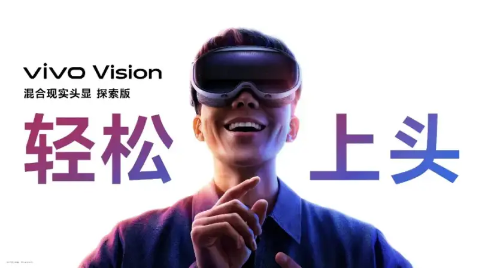
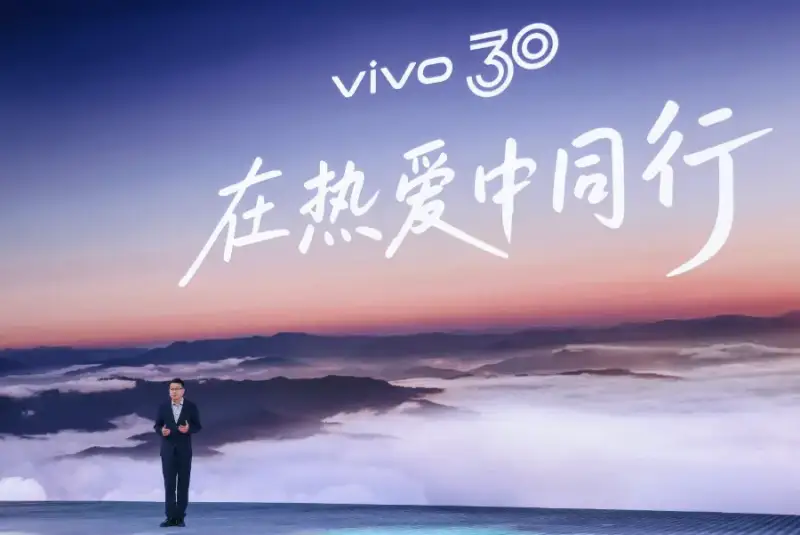
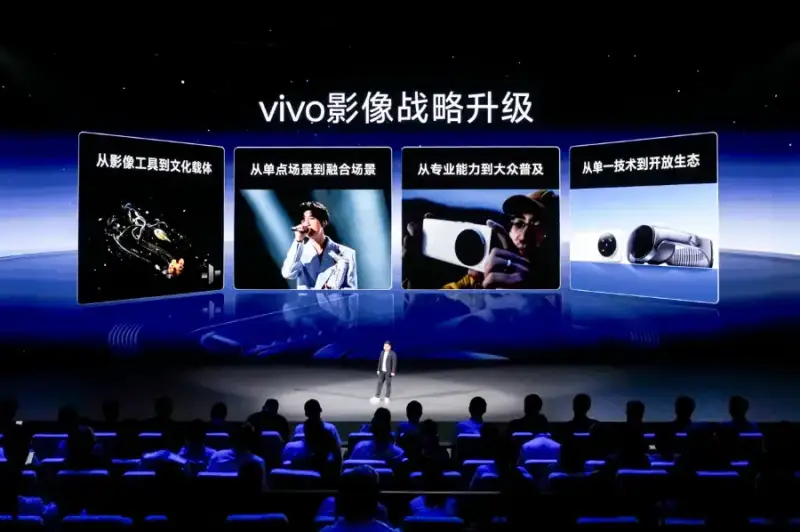
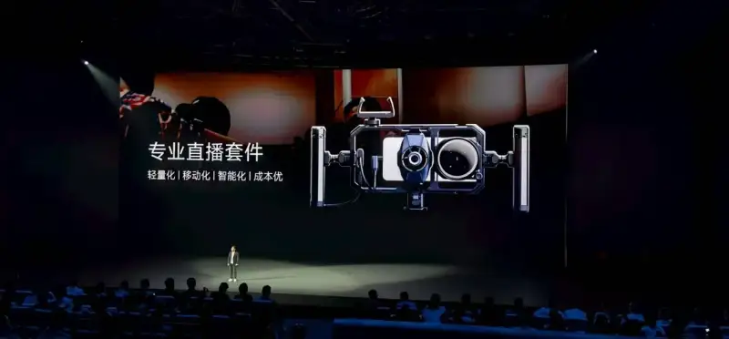
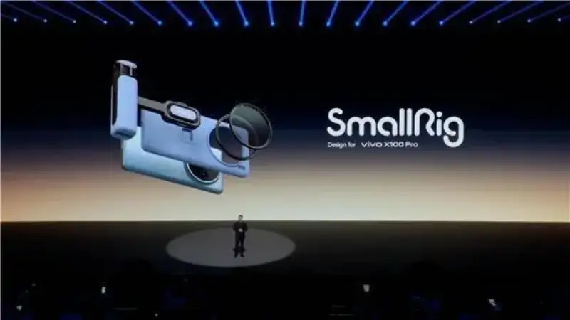
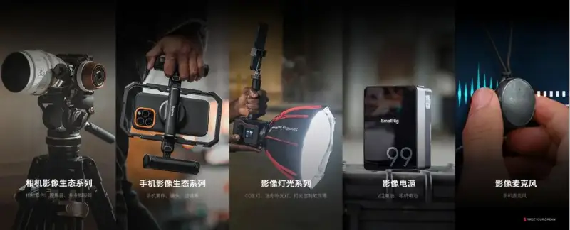

Recently, at the vivo Vision launch and imaging gala, vivo released the vivo Vision MR headset Explorer Edition. It became the first Chinese tech firm to lay out both phones and MR.
At the launch, vivo also announced a full upgrade of its imaging strategy, which will further explore users' varied scene mix, push pro skills from the industry to the public, and build a new mobile imaging ecosystem. This upgrade marks vivo's shift from a hardware maker to an imaging platform, and SmallRig, Zeiss, and other ecosystem partners speeds up this platform.

In-house R&D plus joint R&D: vivo builds an open imaging ecosystem
For 30 years, vivo has relied on a two-wheel strategy of in-house and joint R&D. With a long-term view, it has crossed industry cycles many times and brought users products and services beyond expectations, said Hu Baishan, vivo executive vice president, COO, and head of the vivo Central Research Institute, at the launch.

This strategy shows clearly on the vivo Vision MR headset Explorer Edition. Besides in-house BlueKernel system innovation, vivo Vision uses the latest second-gen Snapdragon XR2+ platform. It gives binocular 8K 90Hz ultra-HD display, a 15 percent faster GPU (vs the second-gen Snapdragon XR2) and up to 20 percent faster CPU. It opens a flagship visual and interaction experience, gives a light body strong performance, and supports spatial computing.
In imaging, where vivo invests heavily, in-house and outside R&D work together even more. vivo X100 seriesat its launch unveiled the Blueprint Imaging system, built with vivo, Zeiss. It better supports and completes the vivo-Zeiss imaging system, and it shows the leading imaging tech of Zeiss and vivo across the supply chain. In addition, deep work with sensor makers like Sony and Samsung keeps completing vivo's imaging tech stack.
vivo imaging is, at its core, an open system of in-house and joint R&D running in parallel, and a fused system of cross-field work, vivo said. To drive the imaging ecosystem forward, vivo announced a full upgrade: from imaging tool to cultural carrier, from single scene to fused scene, from pro to public, from tech to ecosystem, building a new mobile imaging ecosystem.

At the launch, as vivo showed the imaging power of its new products, the custom All-in-One camera kit from SmallRig, known as the Lego of imaging, appeared often and became a key way to show vivo's imaging strength.

Ecosystem fusion: SmallRig boosts phone imaging
This deep co-creation for niche imaging scenes is not new. In 2023, SmallRig appeared at the first vivo X100 launch, using custom expansion kits to help vivo show its pro imaging power.

First vivo X100 series launch in 2023
At the same time, this co-creation helps build the imaging scene ecosystem. At the 2025 CCTV Spring Gala, the tech team used smartphones as live-shot cameras for the first time. Four vivo X200 Pro phones with SmallRig pro cages were set as mobile camera positions, They not only moved freely in tight space, but also caught angles and spots that normal cameras could not.

Behind this joint work is steady user demand. As short video and live streaming grow, users want more professional, scene-specific gear. By Frost & Sullivan, “the 2024 White Paper on the Global Smart Handheld Imaging Device Market” shows, the global consumer smart handheld imaging market grew from 2017 to 2023 at a 14.2 percent CAGR, and will keep an 11.6 percent overall growth rate from 2023 to 2027. Among these, the China market will reach 17.8 percent CAGR.
Take SmallRig, a brand of Leqi Innovation, for example. Since its founding, it has held to co-creation with users and explored imaging scenes with them. Through a unique global co-creation model and a small-batch, multi-category, high-frequency, semi-custom fast-manufacturing agile supply chain, SmallRig has built five product lines: camera support and stabilization, smartphone support and stabilization, lighting and control, imaging power, and imaging microphones, across these five lines.

SmallRig's core product lines
In the wave of making imaging universal, scene-based, and professional, this deep, user-driven model opens more possibilities for the whole industry. We hope more gear makers join to bring users better imaging solutions and push the industry into a more open, creative, and inclusive new era.